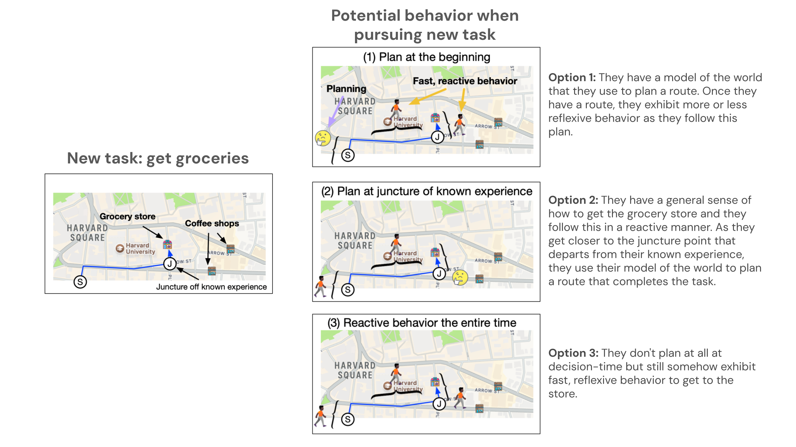

Consider someone that has moved to a new neighborhood and visited two coffee shops. Along the way, they observed a grocery store along their route. When they later want to go to the grocery store from their home, what behavior do you think they will exhibit?
Option 1: They have a model of the world that they use to plan a route. Once they have a route, they exhibit more or less reflexive behavior as they follow this plan.
Option 2: They have a general sense of how to get the grocery store and they follow this sense with reflexive behavior at first. As they get closer to the juncture point that departs from their prior experience, they use their model of the world to plan a route that completes the task.
Option 3: They somehow have reflexive behavior that they can follow which leads them to the grocery store.
While people certainly exhibit options 1 and 2 sometimes, we argue people exhibit option 3 more often than we realize. This is the behavior that is predicted by Multitask Preplay.
NiceWebRL is is a Python library for quickly making human subject experiments that leverage machine RL environments. It supports making online web experiments with 50+ machine RL environments and was used for all experiments in this paper.
Naturalistic Computational Cognitive Science: Towards generalizable models and theories that capture the full range of natural behavior. This is a position paper on why and how we can build generalizable models of human behavior that can scale up to increasingly naturalistic experimental paradigms. This project is an example of doing that: we first predict human behavior in a fully-observable grid-world, and then in a partially-observable 2D minecraft environment.
Predictive representations: building blocks of intelligence. This is a review of predictive representations in machine learning, cognitive science, and neuroscience. We focus on the family of predictive representations defined by the successor representation, but the arguments equally apply to the family defined by generalized value functions (which Multitask Preplay is an example of).
@article{carvalho2025preemptive,
author = {Carvalho, Wilka and Hall-McMaster, Sam and Lee, Honglak and Gershman, Samuel J.},
title = {Preemptive Solving of Future Problems: Multitask Preplay in Humans and Machines},
journal = {arXiv preprint arXiv:2507.00000},
year = {2025},
}